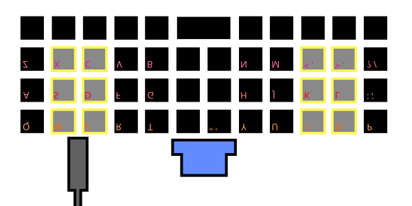
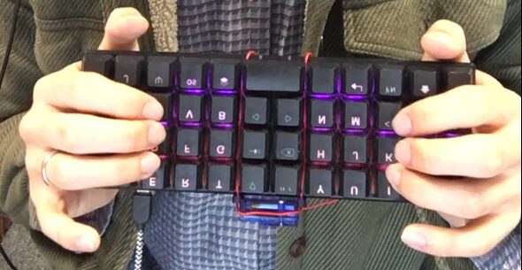
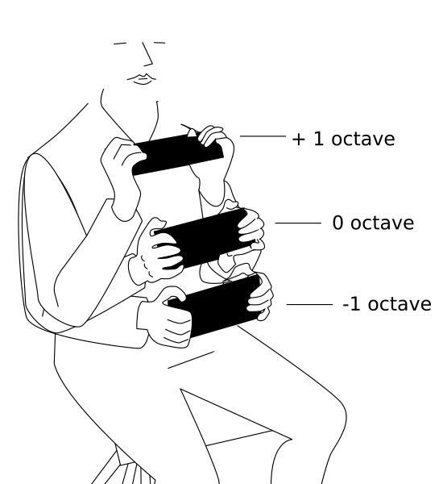
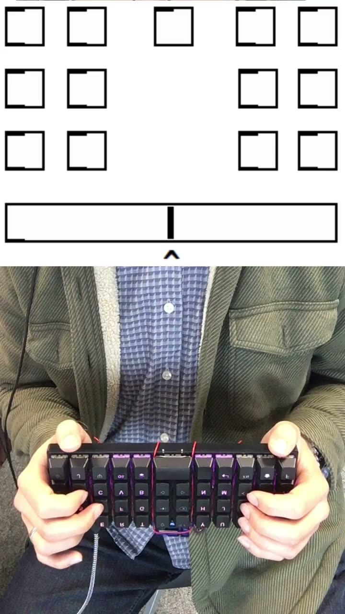
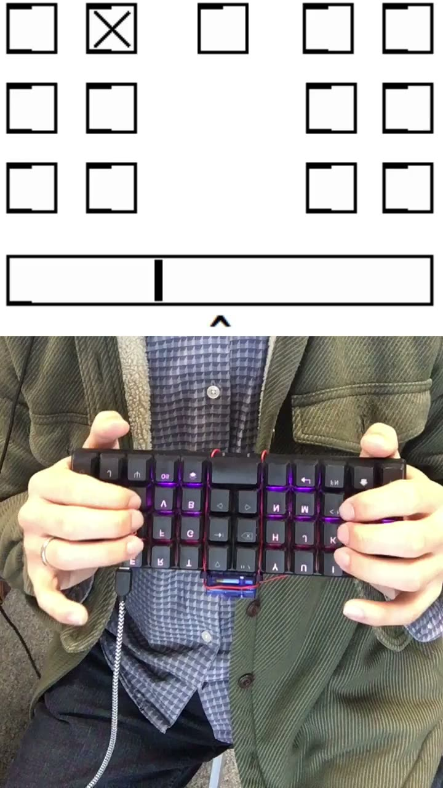
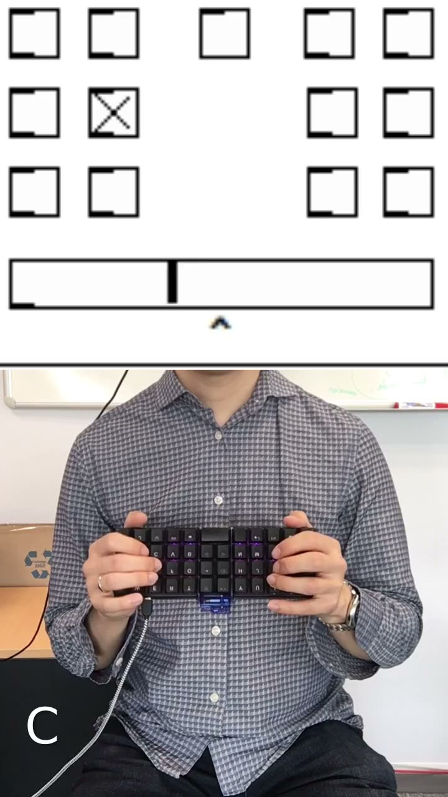

Pitch Fingering Systems and the Search for Perfection
Abstract
In the search for better designs, one tool is to specify the design problem such that globally optimal solutions can be found. I present a design process using this approach, its strengths and limitations, and its results in the form of four pitch fingering systems that are ergonomic, simple, and symmetric. In hindsight, I emphasize the subjectivity of the design process, despite its reliance on objective quantitative assessment.
Author Keywords
pitch fingering systems, optimization, brute force search, DMI design
CCS Concepts
•Applied computing → Arts and Humanities → Sound and music computing
•Human-centered computing → Interaction design → Interaction design process and methods
Optimal Pitch Fingering Systems
The ubiquitous black and white keys of a piano, the frets of a guitar, and the tone holes of a flute are all examples of what I will call "pitch fingering systems". Performers manipulate these instruments with their fingertips in order to control the pitches produced. Traditional pitch fingering systems are beloved by many, and are indubitably valuable, good, and worthy ways of playing music. But are they the best possible pitch fingering systems?
Unlike acoustic instruments, digital musical instruments can easily be developed with arbitrary pitch fingering systems. Designers are free to impose whatever constraints and criteria on the design in order to achieve their specific aims. If appropriate parameters are set, it may be possible to quantitatively evaluate all possible design solutions.
An optimal pitch fingering system is then, by definition, the best possible system. Whether this is practically meaningful depends on whether you agree with the constraints and criteria of the optimization problem. Perry Cook's enduring advice is that "leveraging expert technique is smart" [1]. If you are an expert saxophone player, you may reasonably constrain the design space to those fingering systems used on saxophones. Fair enough. For other individuals, different criteria will take priority.
For instance, (according to Marcelo Wanderley1 [2]), Gerard Beauregard developed the fingering system of the Bleauregard instrument with "[the goal to] propose a fingering that could be more easily learned by beginners." Martin Marier developed the fingering system for the Sponge in search of an idiomatic approach for the instrument [3]. Performers with physical disabilities have their own unique set of constraints; Larsen and colleagues provide an overview of designs for this population in their 2016 article [4].
Obviously there is no ultimate pitch fingering system that is perfect for all people. But for any given set of goals, it may be a useful exercise to quantitatively describe the important evaluation criteria. This may be seen as an early alternative to empirical evaluation, providing one form of evidence of the merits of a design. In this discussion, I will consider some strengths and weakness of this approach; final judgement is left to the reader.
In the rest of this paper, I recount the search for a perfect pitch fingering system. Starting with a review of related work, especially the work of David Hartvigsen that lays the foundation for my approach, I describe my design principles and evaluation methodology, provide a narrative account of the design process, and summarize the final design decisions in the clarity of hindsight. Discussion and conclusions consider the merits and limitations of the design process and possible directions for future work.
Related Work
Musical control of pitch is an important topic that can be approached in numerous ways. Goudard and colleagues previously presented a good overview of approaches and concerns when performing monodic pitch [5]. However, the main features of the present discussion are not prevalent in the literature on digital musical instruments: enumeration of all possible designs, quantitative modelling of the design problem, and optimization. Although enumeration has been approached in the context of isomorphic keyboards by Steven Maupin and colleagues [6], its use for other sorts of pitch fingering systems has not to my knowledge previously been attempted, likely due to the seemingly intractable quantity of possibilities in these contexts.
More similar work, employing quantitative models and optimization to propose designs, is found in the context of text-entry keyboards rather than musical ones. Since the ubiquitous QWERTY keyboard standard was not designed with ergonomics, typing speed, or error minimization in mind, alternative keyboard arrangements have been proposed frequently since at least as early as the 1930s, with the work of August Dvorak [7]. More recently, various heuristic models of advantageous keyboard design have been proposed, and optimization algorithms ranging from simulated annealing [8] to ant colony optimization [9] have been applied to find approximate solutions. The approach to design adopted in these works bears strong similarity to the present work; the designers are focused on ergonomic efficiency, speed, and error reduction, and employ a quantitative cost function to try to find an optimal solution to a heuristic mathematical model of the design problem. The main difference of these works is that the design space of text-entry keyboards is significantly larger than the design space explored here, making exact search impractical.
David Hartvigsen’s Optimal Instruments
Most similar to the current discussion is the work of David Hartvigsen [10][11], whose approach to the design of pitch fingering systems provided the initial motivation for me to take this line of inquiry.
Hartvigsen considers the pitch fingering systems used to play one discrete pitch at a time, where each pitch is selected by pressing a certain combination of buttons, as on a woodwind instrument. His stated goal is to develop an instrument that is optimally easy to play.
Fingerings can be represented by a sequence in binary, where a 1 corresponds to a button being pressed and a 0 to released (or equivalently vice versa). Hartvigsen mainly uses 4 buttons, so fingerings look like 0010, 1101, 1001, and so on, for example. Hartvigsen quantifies the difficulty of moving from one fingering to another by the hamming distance between the two fingerings. For fingerings and , in a system with buttons, the hamming distance is given by the following equation:
Where refers to the boolean value of the button with index in the fingering . So for example, from 1001 to 1101 is a hamming distance of 1 (only the second button changed), or from 1101 to 0010 is a hamming distance of 4 (all four buttons changed)-.
Given some sequence of notes ,s1,...,sq}, the cost of playing the sequence with an instrument , where gives the fingering of the note , can be calculated by accumulating the cost of each note transition in terms of the hamming distance:
For a collection of sequences, the total cost is the sum of the cost to play each sequence:
Thus the difficulty associated with performing a certain pitch fingering system is defined relative to the collection of pitch sequences that are used to evaluate it. Hartvigsen’s approach can be thought of as having two main components: a function that evaluates the difficulty of transitioning from one fingering to another (hamming distance), and the selection or curation of a set of pitch sequences that embody the kind of fingering transitions that a performer is likely to encounter (e.g. common scales [10]). The total difficulty of performing with the system is a kind of product between fingering-transition cost and fingering-transition likelihood.
Evaluation Procedure
My own evaluation procedure is roughly analogous to David Hartvigsen's. A set of initial constraints are adopted that reduce the size of the search space and improve the simplicity of the resulting pitch fingering systems. A cost function is then used to operationalize the notion of performance easiness/difficulty in terms of the likelihood of performing a movement, and the difficulty of performing that movement. Unlike Hartvigsen, I develop a more compact model of movement likelihood that allows systems to be evaluated in constant time with respect to the size of the pitch sequence dataset used, and I use empirical measurements of movement difficulty in order to incorporate physiological concerns in the model. Furthermore, due to a different set of initial constraints, the design space investigated here is small enough that a brute force search is readily accessible by using parallel computing techniques.
Initial Constraints
Hartvigsen considers systems in which four buttons are used to select pitch class and a separate set of buttons is used to determine octave. The number of possible pitch fingering systems satisfying this constraint is very large (described in appendix B below), and Hartvigsen writes [11] “enumerating the mappings to find the best for a particular collection of note sequences is not possible.” For my purposes, I wanted to examine a design problem in which a globally optimal solution could be determined without complex proof, such as by an exhaustive search where every possible system is enumerated.
I therefore chose to examine systems with 12 buttons, where each button is assigned a pitch class2. Pitches are selected by pressing the assigned button, and if multiple buttons are pressed then multiple pitches are played. A separate mechanism is used to determine octave, described below. Although it is possible to play multiple pitches on such a keyboard, in this process I have only optimized for playing one note at a time, as in a melody.
Additional Benefits
As well as decreasing the size of the search space, using 4 or 12 buttons to select pitch class with a separate control over octave provides an additional benefit: in these systems, the number of different fingerings required to play a given sequence in a different key or octave is minimized. This should be advantageous when learning to play these systems.
A sequence of pitches can be identified irrespective of octave and transposition by converting it to a sequence of interval classes. On 4 or 12 button systems as described, there are exactly 12 ways to perform any sequence of interval-classes (one for each transposition). This is a meaningful reduction compared to most instruments, where, as well as differing by transposition, fingering may also differ depending on octave or other factors such as alternate fingerings.
Selecting pitch class separately from octave provides a marked reduction in possible "things" that can be played, from strong octave-equivalence and lack of alternate fingerings. In principle this should make a pitch fingering system easier to learn, since there is simply less to learn.
Prototype Interface
Having constrained the design space to instruments with 12 buttons as described, I wished to firmly ground the design exploration in a practical context. For this purpose, I developed the simplest possible prototype interface I could imagine. The interface consists of a Planck ortholinear text-input keyboard3 with an orientation sensor attached to the bottom. 12 buttons are chosen to control the interface—six per hand, in four columns and three rows, highlighted in the schematic diagram below. This layout of buttons influenced several later design decisions, so it is important to note. Note also that throughout the paper, images are represented as if looking in a mirror to facilitate the reader “playing along” with their imagination, as if they were holding the prototype themselves.


Schematic of the prototype as seen in a mirror when holding the device to play. The keys used for performing are highlighted. The orientation sensor is seen attached to the bottom of the device.


Image of the prototype device showing how the device is held when performing. The instrument is stabilized by pressure from the palms of the hands pressing in on the sides of the device.
The octave is controlled based on the inclination of the keyboard as illustrated in the following diagram and in the demonstrations in later sections and appendix A.


Illustration of the octave control mechanism. Octave is controlled by tilting the device up and down.
Fingering systems in the remainder of the paper are notated based on the layout of the buttons as seen by the player when looking in a mirror:
0 3 ... 6 9
1 4 ... 7 10
2 5 ... 8 11Movement Likelihood
One half of the cost function used to evaluate potential pitch fingering systems is based on the likelihood that a movement from one button to another will be required4. Hartvigsen models this probability distribution by directly accumulating his movement difficulty metric over a set of sequences of pitches. This means that the time to compute the overall cost for each system grows in proportion with the size of the pitch sequence dataset.
I adopt a simplified model of movement likelihood based on the strong octave-equivalence of the pitch-class-oriented systems considered, and the quality of 12 tone equal temperament tuning that sequences transposed by an interval are in some sense "the same". Rather than directly storing the pitch sequences of interest, we can instead collect sequences of interval classes derived from the pitch sequence dataset. By simply counting the relative frequency of each interval class, we end up with a compact model of how likely you are to play any given interval class.
Assuming two pitches and are labelled with their MIDI note number, the interval class between them can be calculated as follows:
interval_class = mod(b, 12) - mod(a, 12)
if interval < 0:
interval_class = interval + 12
elif interval > 6:
interval_class = 12 - intervalThe interval class corresponds to the smallest interval between two pitch classes, where the pitch class of a pitch is given by . For example a minor third (3 semitones, e.g. A to the next C) is in the same interval class as a major sixth (9 semitones, e.g. C to the next A) or a minor tenth (15 semitones, e.g. A to after the next C). There are 6 interval classes in 12 tone equal temperament tuning.
The overall likelihood of each interval class can be accumulated as follows:
interval_likelihood = [0,0,0,0,0,0,0]
N = len(pitch_sequence)
for n in range(1, N):
a = pitch_sequence[n-1]
b = pitch_sequence[n]
interval_likelihood[interval_class(b - a)] += 1 / (N-1)The final model consist of just six numbers, regardless of the size of the original dataset. If the probabilities are stored in a list, as above, then the probability of an interval class with semitones is given by . So for instance, the probability of repeating a note is , the probability of playing a semitone is , a whole tone is (since a whole tone is equivalent to two semitones) and so on.
Since I am interested in performing jazz melodies, I calculated the relative frequency of interval classes found in the Weimar Jazz Database using the MeloSpy tool, both from the Jazzomat project [12]. The resultant interval class probabilities are thus:
interval_likelihood = [0.06, 0.27, 0.28, 0.18, 0.10, 0.09, 0.02]Movement Cost
The other aspect of ease/difficulty is the operationalization of the cost of transitioning from one fingering to another. Here we wish to model the full complexity of the physiological system of the hand, wrist, arm, and so on, used to play the system. Rather than attempt to model this intricate system, I propose to simply measure the difficulty of each fingering transition empirically. This is feasible thanks to our initial constraints on the design; because there are only twelve buttons, each associated with one pitch class, there are only 66 possible transitions from one fingering to another ().
One approach to this measurement is to perform each of the 66 possible trills/tremolos between two fingerings for a certain amount of time (e.g. 10 seconds) and count the number of transitions. Based on the assumption that easier transitions will be easier to trill, a higher number of transitions should be measured in the same period of time. Dividing the number of transitions by the measurement period gives the rate of transitions. The inverse of this rate provides the period of each transition; easier fingering transitions should have smaller periods.
This measurement procedure provides a very specific snapshot where the final measures incorporate all of the influences on the difficulty of performing the system, ranging from the physical layout and design of the keyboard to the particular physiology of the subject or subjects performing the instrument in the measurement trials. Every individual player could in principle provide their own measurements, such that the final pitch fingering system is optimal to their unique physical capabilities.
Obviously if I wished to develop a system that was optimal in a general way, numerous measurements would be required from a reasonable number of participants in a controlled experiment. However, since my goal is to develop a pitch fingering system primarily for myself, I only measured my own movement difficulty, when performing with the prototype interface described above. I accept that this limits the generality of the design results, but argue that it does not limit the merit of the design strategy.
System Cost
Given the movement likelihood and movement cost as described, the overall cost associated with a pitch fingering system can be calculated as follows. First, a list of button transitions is initialized:
button_transitions = [(0,1), (0,2), (0,3), ..., (0,11),
(1,2), (1,3), ..., (1,11),
(2,3), ..., (2,11),
...
(11,11)]Each element of this list is a pair of numbers referring to buttons. Thus, for example, the transition labelled “(1,3)” represents the transition from the button labelled 1 to the button labelled 3. The button labels used here are shown in the section above related to the prototype interface, but any 0-based integral indexing system can be used as long as it is consistent. The list of movement costs may be initialized so that the cost of a given transition is located at the same address as the corresponding transition in the button transition list. In this way, the cost of the th transition is given by .
A pitch fingering system is represented by a permutation of the numbers 0 to 11. If the permutation is loaded into a list5, then the pitch associated with the button labelled in this system can be accessed by looking up the element with address in the list, . In other words, the order of pitches in the permutation allows pitches to be matched to buttons, since the buttons have a fixed order.
A series of transformations then leads from the button transition list to a list of interval classes, and then to the cost of the system. Using Python syntax, the procedure is approximately as follows:
pitch_transitions = [ (permutation[n], permutation[m])
for n, m in button_transitions ]
interval_classes = [ interval_class(b - a)
for a, b in pitch_transitions ]
costs = [ movement_likelihood[ic] * movement_cost[n]
for n, ic in enumerate(interval_classes) ]
system_cost = sum(costs)Parallel Search Procedure
In order for an exhaustive brute force search of the whole design space to be feasible, parallel computing methods must be employed. The challenging part of this is actually not evaluating the systems, but simply generating them. The systems are represented as permutations, which are normally generated one after another serially. Typically, you start with a trivial permutation (), and then apply some procedure to generate the next permutation, and then recursively apply the same procedure to generate all permutations. This approach is incompatible with parallel computation, so a somewhat more unusual method is adopted.
Permutations are generated from an integer representing the order of a particular permutation in the list of all permutations ordered lexicographically. This transformation is accomplished by first converting the integer to factoradic or factorial number system representation. The factoradic representation of the integer is then treated as a Lehmer code in order to transform it into a permutation. More details of this algorithm can be found in Keith Schwarz implementation in his Archive of Interesting Code [13].
This approach is easy to parallelize. Each parallel processor only needs to be told what index to start on and how many permutations to generate, and can independently generate its permutations, evaluate them, and write the results (including the system cost and the permutation representing the system) to shared memory where it can later be collected.
My full implementation using OpenCL can be found here. Running on a consumer gaming laptop, using both the CPU and GPU, this implementation is able to generate and evaluate all possible pitch fingering systems satisfying the constraints of my design space in less than 10 seconds. Running on only a consumer laptop CPU, the whole search takes less than 3 minutes.
The Search for Perfection
In this section I recount how the plan outlined above, developed relatively early in the design process, was inevitably forced to change when put into action. At some point early in the process, before the difficulty measurement procedure was implemented, I recorded a pitch fingering system that I found particularly promising; I may have developed it ad-hoc, or found it using the evaluation procedure described with ad-hoc cost numbers, before measurements were taken. After the difficulty measurement procedure and full cost function described above were implemented, compared to this early recorded system, I found the results disappointing. The systems found seemed random, disorganized, and were unpleasant to explore. An example follows, with its inversion. The inversion is used in the video demonstration, which shows a chromatic scale played on the prototype and as seen in the Pure Data synthesizer made for the prototype.
0 6 1 7 12 6 11 5
3 9 10 4 9 3 2 8
11 5 2 8 1 7 10 4
▶Video demonstration of one of the systems found before additional constraints were placed on the search space, used to play a chromatic scale. The slider in the Pure Data UI gives an indication of whether the octave control signal is above or below the most recently activated pitch. https://youtube.com/shorts/XVVUm4aOcrY?feature=share
I thought perhaps I could derive more smooth and symmetric solutions by smoothing out the movement cost data. I had noticed while performing trills that I was able to perform more quickly with my right hand than my left, and that certain finger movements were easier than others: alternating between hands was easier than alternating between fingers which was in turn easier than moving one finger back and forth between a pair of buttons in two different columns. I tried averaging the movement cost data across hands, then averaging the cost data within types of finger movements, but neither of these changes produced the kinds of results I was looking for.
Curious how my preferred early result compared to the optimal-but-unsatisfying solutions I had found since then, I ran it through the evaluation routine: it was rated almost as well as the "more optimal" solutions, worse by less than one percent.
Considering this, and the low accuracy of my movement difficulty measurement protocol, I became concerned that very good potential solutions were being masked by measurement noise and an overzealous optimization algorithm. To combat this, I truncated the resolution of the cost evaluation to be more in line with resolution of my measurement protocol; this was achieved by multiplying the final cost by 100 and rounding to the nearest integer, effectively discarding decimal place values a thousandth and less. Behold, my favorite pitch fingering system from the beginning now emerged as one of the optimal solutions, along with several hundred other solutions.
Since the quantity of results was now too large, I considered how to quantitatively describe the properties of the pitch fingering system that I was attracted to, to reduce the solution set to systems with these desirable properties. The main difference I noted was that my preferred solution was symmetric. If a sequence of finger movements were performed with either hand, either hand would produce the same pitch-class sequence transposed by a minor third relative to each other. I added a step to the evaluation procedure that would severely penalize pitch fingering systems not possessing this symmetry property, so that they would be filtered out of the solution set.
Now my preferred fingering system was one of just a few optimal solutions. Considering all of the results at this step, I continued to significantly prefer the same solution. It differed from most other results in that buttons in the same column were always separated by a semitone from their neighboring buttons in the column, giving a sense of smoothness to this solution. I added this as a final constraint, reducing the number of results to two canonical pitch fingering systems, plus their inversions. The fourth system is used in the video demonstration that follows.
0 6 3 9 12 6 9 3
1 7 4 10 11 5 8 2
2 8 5 11 10 4 7 1
0 6 9 3 12 6 3 9
1 7 10 4 11 5 2 8
2 8 11 5 10 4 1 7
▶Video demonstration of my preferred system from the final set of four systems, used to play a chromatic scale. https://youtube.com/shorts/3aVDmzxf2Lg?feature=share
Summary
The final design choices are summarized in the table below with some information on the size of the design space as different constraints are applied.
Constraints Applied | Number of Possible Solutions | Number of Canonical Optimal Solutions2 | Example Result |
12-Button3 | 479001600 (19958400) | 974 | |
Symmetric4 | 69120 (2880) | 12 | |
Smooth5 | 144 (6) | 2 | |
Symmetric and Smooth | 96 (4) | 2 | See the four systems at the end of the previous section. |
1: the number of solutions can be reduced by keeping only one canonical form of solutions that are equivalent under transposition and inversion | |||
2: optimal results are found by evaluating possible solutions using the method described above based on movement likelihood and movement difficulty, with final scores truncated to the hundredths place | |||
3: examine only 12-button systems where each button is assigned a single pitch class, and octave is determined by a separate mechanism (in this case the inclination of the keyboard) | |||
4: require movements played with one hand to perform the same interval-class sequence when played with the other hand | |||
5: require buttons within the same column to be separated by a semitone from their neighbors | |||
The reader is encouraged to explore the other optimal solutions under each set of constraints using my implementation of the described procedure available on github (DocSunset/pitch-fingering-brute).
An Approximate Search
One of the apparent advantages of a design process driven by a quantitative evaluation function is the semblance of objective mathematical rigor. Claims can be made about a solution being globally optimal or "the best possible" (to quote myself from earlier in the paper), with the implication that these solutions were determined by an impartial and unerring computational system and cannot be rationally called into question. This appearance of rigor and rationality is deeply threatened by the honest messiness of the design process. It is clear in the above account that past a certain point in the process, I knew exactly what kind of solution I wanted to arrive at and deliberately modified the evaluation procedure to favor that result. When this became clear to me, I began to doubt the foundations of my design process. Is my science a sham?!
No. Horror is not necessary. I realized that, although this kind of result picking would be gruesomely inappropriate in many contexts, in this and most design processes it is perfectly normal and necessary. After all, the goal of this design is to develop a pitch fingering system that is as close to perfect (for me personally) as possible. As such, the cost function is not the final arbiter: I am. The cost function (which I developed based on my own subjective goals and interests) is one indicator of value, but my own judgement as a designer is the final test. The fact that the results of early searches were dissatisfying doesn't indicate that I am irrational, but that the evaluation procedure was not modelling important properties of the design problem.
Since the final results of my design process are almost entirely determined by the final set of constraints, it is reasonable to question whether the use of a cost function and search procedure is useful or necessary. I argue that the use of a cost function motivated several key design choices, such as the use of only 12 buttons, and the final selection of systems; with both the “smooth” and “symmetric” constraints imposed, there are four distinct canonical solutions (plus their inversions). The cost function favors two of them, leading to the selection of the final two systems (plus their two inversion). The cost function also retains its usefulness as a comparative metric; the final chosen systems score more favorably than 99.996% of possible systems, including 99.996% of symmetric systems. These solutions, along with 972 other distinct optimal solutions, are given the lowest possible score of 203 by the cost metric employed here. For comparison, the average score is 218, and the worst score possible is 235; the scores are distributed with a roughly Gaussian bell-curve throughout the whole design space.
Adding additional constraints is a natural way to model important properties, in this case symmetry and smoothness. Another designer with different goals might choose other constraints. This is where the broad design strategy employed here begins to really shine. This approach allows designers to unambiguously describe the design space so that meaningful design choices can be more readily understood, communicated, and built upon. Iterative community-based development is facilitated by such a clear common language.
It is crucial to recognize that the overall design process is inherently subjective. Although each iteration of the process may involve an impartial exhaustive search, the higher order process in which these global searches are situated is an approximate search. One thing this illuminates is that it is useful and necessary to question and modify the evaluation criteria. Another key insight is that at some point the designer must manually stop the search and accept a design that is "good enough", or the approximate search may never halt in its quest to find the "best possible".
Future Work
Although it initially appeared impractical to search 4-button-combination based pitch fingering systems by brute force, the performance of the parallel search implementation presented here suggests that it may be approachable. This distinct design space could be explored using the same methods presented here. Another distinct design space worth exploring might be an alternative button arrangement. The reader may yet imagine other design spaces.
The cost function presented here emphasizes melodic playing, one note at a time. It assumes that empirical measurement of trills can be generalized to longer sequences of notes. This assumption could be investigated further by examining empirical measurements of longer sequences of button transitions. Alternative methods could also be developed for quantitatively evaluating the easiness/difficulty of performing chord progressions, based on the same premise of likelihood multiplied by difficulty. Such alternative cost functions could be used to re-evaluate the systems presented here, or to search for other interesting systems.
Finally, of most pressing interest, the practical merit of the presented pitch fingering systems could be deeply investigated by learning to play music using them, and developing a regular musical practice with them.
Conclusion
I present four new pitch fingering systems for an instrument with 12 buttons arranged in three rows and two columns, where each hand plays 6 buttons. The systems are well suited to performing melodies, they are highly ergonomic and symmetric, and very simple to learn. By using a separate control (such as the inclination of the keyboard) to determine the octave, there are exactly 12 ways to play any interval-class sequence—sometimes fewer if also considering the left/right-hand symmetry of the systems.
The design process makes use of an objective quantitative cost function based on movement likelihood derived from a jazz music dataset and movement cost determined by empirical measurement. The use of quantitative evaluation motivated important design choices, leading to results that are more ergonomic and symmetric than the vast majority of possible solutions.
Although the use of brute force search to find "globally optimal" solutions to the design problem implies impartial objectivity, the overall design process remains inherently subjective, and therefore approximate. During the process, additional constraints were added to improve the subjective qualities of the optimal solutions found. Ultimately, the four resulting pitch fingering systems are determined almost entirely by the design constraints; the subjective quality of these results thus depend mainly on whether the evaluator agrees with the design constraints.
The flexibility and un-ambiguity of the overall design approach is especially compelling. Future work may consider other design spaces, alternative cost functions, and novel constraints. Future work may also investigate the merits of the presented systems in musical practice.
Acknowledgements
Thanks to David Hartvigsen for his work on the subject that provided my initial excitement for this topic. Thanks to my brother for getting into system administration and providing the initial motivation to try a brute force search on this problem. Thanks to my spouse for continued encouragement and for showing me at least one better solution when I thought none was possible.
Ethics Statement
The prototype constructed in this project used only materials available on hand, minimizing electronic waste. No non-environmental ethical concerns are noted.
Appendix A: Major Scales
All 12 major scales are demonstrated in the following video. The current tonic is noted in the bottom left corner.

▶All major scales played on one of the final pitch fingering systems. https://youtu.be/nXexwuUR1xo
Notice that due to the symmetry between hands and within columns, the major scales can be grouped based on how they are played into three groups. Scales within the same group are played with the same sequence of columnar patterns. For example, C, Eb, Gb, and A major scales all start with the bottom and top button in one column, the middle and top button in the next column, only the middle button in the next column, and then the bottom and top button in the final column. This provides an early positive example of how the chosen design constraints make the system potentially a little easier to learn.
Appendix B: Number of Possibilities
In either case, 4 buttons (as employed by Hartvigsen) or 12 (as explored here), if the button combinations or individual buttons that determine a pitch class are placed in a fixed order (the actual order is inconsequential), a pitch fingering system can be represented by a permutation of the 12 pitch classes. There are possible permutations, and this corresponds to the number of possible pitch fingering systems when using 12 buttons in the way described above.
For 4 button systems, an additional step is required: with 4 buttons, there are =16 different button combinations, from which 12 must be selected to assign pitch classes to. This adds an additional choice with different possibilities, increasing the total number of possible systems to [11].
Footnotes
because I could not find a copy of Beauregard’s own thesis: Beauregard, G. T. (1991). Rethinking the Design of Wind Controllers. Dartmouth College.
↩12 tone equal temperament is implied. Other tuning systems could be approached similarly, although brute force search may not be feasible if the number of pitch classes is much larger.
↩- ↩
Since we are concerned with melody playing, movements from two or more buttons to two or more buttons, as for instance when moving from one chord to another, are not considered.
↩or any data structure providing a zero-based indexing operation
↩
Citations
- ↩Cook, Perry. 2001. “Principles for Designing Computer Music Controllers.” In Proceedings of the CHI’01 Workshop on New Interfaces for Musical Expression (NIME-01), 3–6.
- ↩Wanderley, Marcelo M. 2001. “Interaction Musicien-Instrument: Application Au Contrôle Gestuel de La Synthèse Sonore.” PhD, University Paris 6.
- ↩Marier, Martin. 2014. “Designing Mappings for the Sponge: Towards Spongistic Music.” In Proceedings of the International Conference on New Interfaces for Musical Expression, 525–28.
- ↩Larsen, Jeppe Veirum, Dan Overholt, and Thomas B. Moeslund. 2016. “The Prospects of Musical Instruments For People with Physical Disabilities.” In Proceedings of the International Conference on New Interfaces for Musical Expression, 327–31. Brisbane, Australia: Queensland Conservatorium Griffith University.
- ↩Goudard, Vincent, Hugues Genevois, and Lionel Feug. 2014. “On The Playing of Monodic Pitch in Digital Music Instruments.” In Proceedings of the International Computer Music Conference, 1418–25.
- ↩Maupin, Steven, David Gerhard, and Brett Park. 2011. “Isomorphic Tessellations for Musical Keyboards.” In Sound and Music Computing.
- ↩Dvorak, A., N.L. Merrick, W.L. Dealey, and G.C. Ford. 1936. Typewriting Behavior: Psychology Applied to Teaching and Learning Typewriting. American book Company.
- ↩Light, Lissa W, and Peter G Anderson. 1993. “Typewriter Keyboards via Simulated Annealing.” AI Expert.
- ↩Oliver Wagner, Marc, Bernard Yannou, Steffen Kehl, Dominique Feillet, and Jan Eggers. 2003. “Ergonomic Modelling and Optimization of the Keyboard Arrangement with an Ant Colony Algorithm.” Journal of Engineering Design 14 (2): 187–208.
- ↩Hartvigsen, David. 2010. “Optimal Electronic Musical Instruments.” European Journal of Operational Research 206 (3): 614–22.
- ↩Hartvigsen, David. 2014. “Fingering Systems for Electronic Musical Instruments.” Journal of Mathematics and Music 8 (1): 41–58.
- ↩Hartvigsen, David. 2010. “Optimal Electronic Musical Instruments.” European Journal of Operational Research 206 (3): 614–22.
- ↩Hartvigsen, David. 2014. “Fingering Systems for Electronic Musical Instruments.” Journal of Mathematics and Music 8 (1): 41–58.
- ↩Pfleiderer, Martin, Klaus Frieler, Jakob Abeßer, Wolf-Georg Zaddach, and Benjamin Burkhart. 2017. Inside the Jazzomat - New Perspectives for Jazz Research. Schott Campus.
- ↩Schwarz, Keith. 2011. Factoradic Permutations. Archive of Interesting Code. https://www.keithschwarz.com/interesting/code/?dir=factoradic-permutation.
- ↩Hartvigsen, David. 2014. “Fingering Systems for Electronic Musical Instruments.” Journal of Mathematics and Music 8 (1): 41–58.